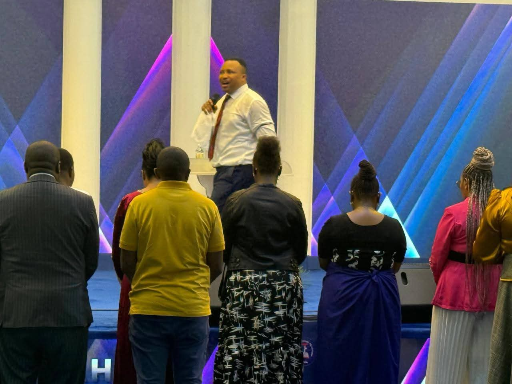
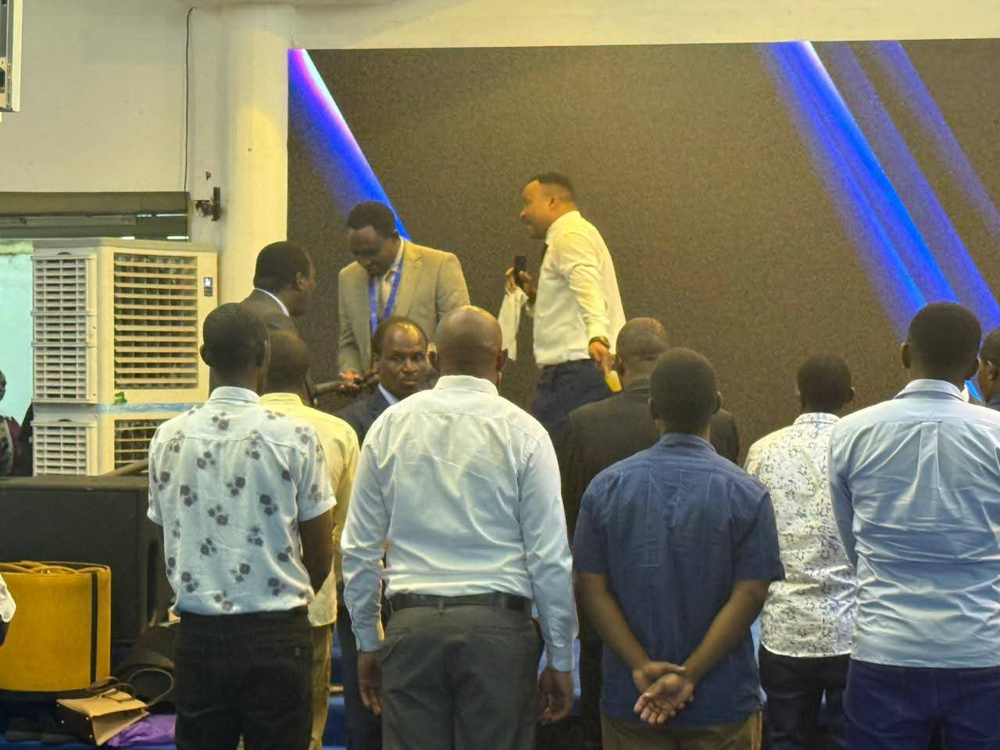
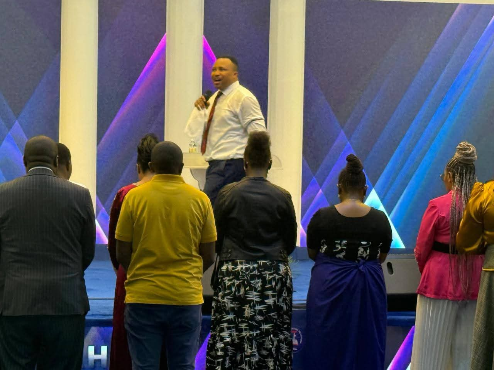
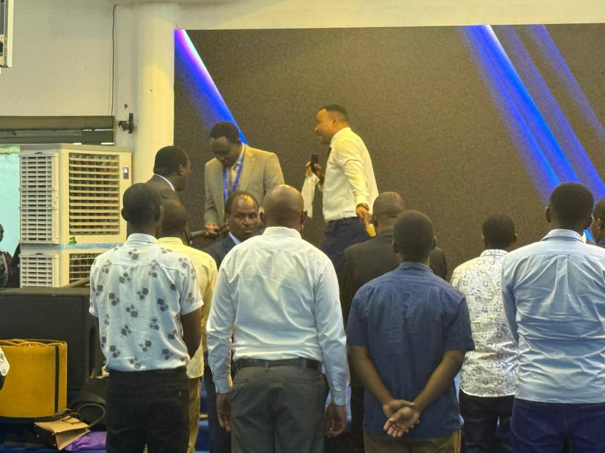

Welcome to CITADEL OF MERCY INTERNATIONAL CHURCH
Where faith comes alive and community thrives
Where faith comes alive and community thrives

Meet the visionary leader of Citadel of Mercy International Church. A servant of God dedicated to preaching the undiluted Word of truth and leading souls to Christ.

The Citadel Choir ushers God’s presence through powerful worship and praise. Their mission is to minister to the hearts of people with heavenly melodies.


We believe in love in action. Through food drives, medical aid, and education, we extend God’s mercy to our community.


Our intercessory team stands in the gap for the church, families, and nations. Prayer is the heartbeat of Citadel of Mercy International Church.
 



A message on keeping our eyes fixed on Jesus, the author and finisher of our faith.


Discover the joy, power, and intimacy that comes from a daily walk with the Lord.


The necessity of prayer in building a victorious Christian life.